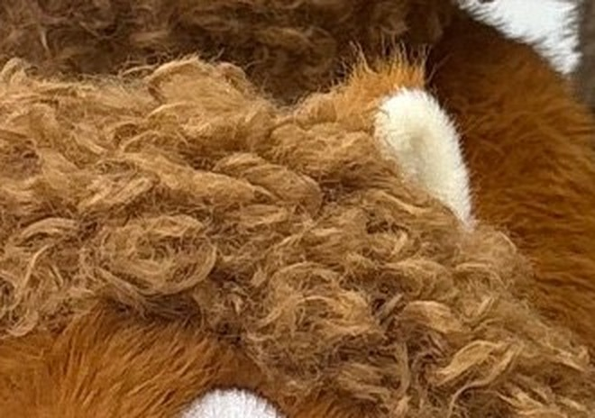
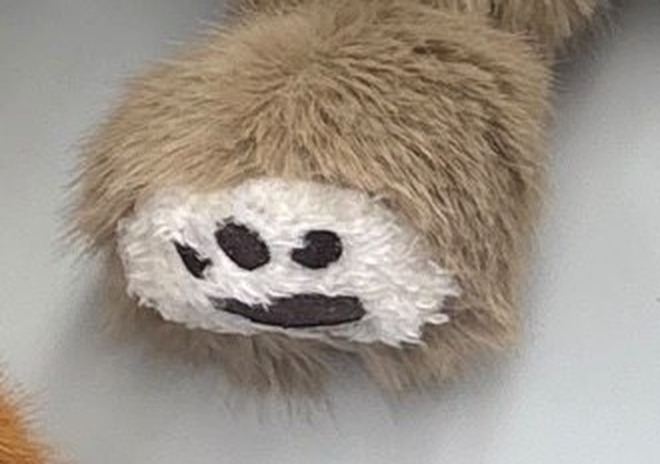

03 · Touch
Every animal feels different.
Red Panda
Sloth
Curly mane

Silky-smooth ears
Waffle-knit belly
Ribbed paw pads
Long-pile fur
Smooth face
Textured claws

Paw-pad feet
Hidden texture patches on belly, paws and ears — it just looks like a plush you love.